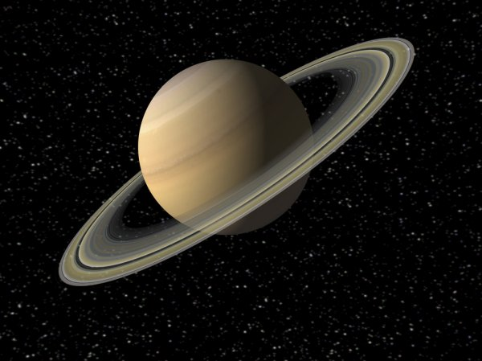

¿Como podemos calcular el peso de una persona en otro planeta?

Para calcular el peso de una persona fuera
de nuestro planeta azul existe
una fórmula clara y simple, en la que dicho peso es igual al resultado
de multiplicar nuestra masa por la fuerza de la gravedad de cada planeta o cuerpo
p=m*g
En la tierra pesas distinto que en otro planeta